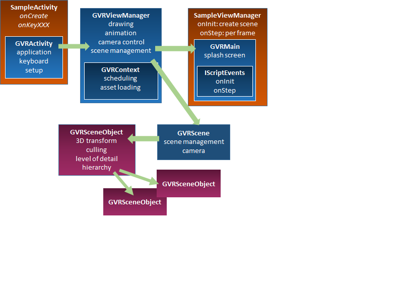

GearVR Framework Development Overview¶
Introduction to GearVRf integration and VR app development
GearVRf provides tools to speed up development of advanced features in high quality VR applications. Available EGL extensions (including dual scan, front buffer, MSAA, and tile rendering) allow the best render quality.
GearVRf is a native code 3D rendering engine with an Android library interface. You can build non-trivial content using only built-in objects. You can add new objects (such as scene objects with or without GL shaders) derived from classes or by overriding some methods - GearVRf takes care of all hardware handholding. You can do just about everything in Java - all source code is published, so you can easily add to or tweak native code.
Anatomy of GearVRf Applications¶
GearVRf is a framework which controls how and when your code is executed. Subclassing GearVRf objects allows you to add your own code. You can also listen to GearVRf events and provide callbacks that respond to them.
A 3D scene is represented as a hierarchy of GearVRf scene objects. Each visible object has a triangle mesh describing its shape, a material describing its color properties and a transformation matrix controlling its position in the 3D world. You do not explicitly call OpenGL when using GearVRf. Instead, the GearVRF framework manages all rendering, providing a higher level abstraction for graphics.
When constructing an Android application, you subclass the Activity class. Similarly, when constructing a GearVRF application you subclass GVRActivity, providing initialization code to create a GVRMain to set up the initial 3D scene and handle input events.
During initialization, GVRActivity creates a GVRViewManager which does all the heavy lifting. This class is responsible for task scheduling, 3D rendering, animation and asset loading.

Thread Management¶
One key constraint of embedded GPU programming is that there is only one GL context. That is, all GPU commands must come from the same thread - the GL thread. The GPU should always be busy; therefore, the GL thread cannot be the main GUI thread.
When starting GearVRf, your Android app creates the GL thread, puts the phone into stereoscopic mode, and supplies a pair of callback methods that run the app's startup and per-frame code on the GL thread. GearVRf provides methods for any thread to schedule runnable callbacks to the GL thread. All these callbacks mean that GearVRf programming is event-oriented on the GL thread in just the same way that Android programming is event-oriented on the GUI thread. Running two independent event systems on two independent threads does mean that you have to think about IPC whenever your Android Activity code on the GUI thread interacts with the GearVRf code on the GL thread. However, dual-thread operation also creates another huge section of your application that can take advantage of event atomicity. That is, callback events are method calls from a main loop - neither the GUI thread nor the GL thread ever runs more than one callback at one time, and each callback has to run to completion before any other callback can start on that thread. Your GL callbacks do not have to write code to keep other GL callbacks from seeing data structures in a partially updated state.
Scene Graph and Scene Objects¶
Your startup code builds a scene graph made up of scene objects, and your per-frame code then manipulates the scene graph in real time. Each scene object has a 4x4 matrix that describes its position, orientation, and zoom relative to its parent. Each scene object can parent other scene objects, so complex objects can be composed of multiple small objects, each with its own shape and appearance, with all changing in synchrony. Each scene object provides methods to change its components using a lazy update pattern, which means that multiple updates per event cost very little more than a single update.
You make a scene object visible by adding a surface geometry and a skin. The geometry is a mesh of 3D triangles. GearVRf provides methods to build simple rectangular quads, and to load more complex meshes from files built by 3D model editors.
Each material class contains the shader type, the GL identifier of a shader, values for all shader parameters, texture, and other uniform mappings. Each shader has two parts: a vertex shader and a fragment shader. The vertex shader is called for each vertex of each visible triangle and can compute triangle-specific values that are passed to the fragment shader, which draws each pixel of each visible triangle. GearVRf contains standard shaders that provide methods, such as simply sampling a texture (a bitmap image in GPU memory), without applying any lighting effects. You can create custom shaders by supplying vertex and fragment shaders and by declaring names to bind Java values to. The GL shader language is very simple and C-like; you can learn a lot by reading a few of the shaders in the sample applications.
Scene Graph¶
The scene graph describes the spatial relationship between objects in the scene. Each scene object has a 4x4 transformation matrix to position and orient it locally. The scene objects may be nested so that the transformations of the parent nodes are inherited by the children. This allows objects to be easily positioned and animated relative to one another.
Here we see a scene graph for a butterfly with a body and two wings. Each scene object has a position and an orientation. The left and right wings can share the same mesh but it is positioned and oriented differently for each wing. The initial translation on the body is inherited by the wings.

The form of your scene graph can have implications for the performance of your application. Typically, having lots of small objects performs poorly compared to several large objects with a similar total vertex count. This is because there is a considerable amount of overhead in rendering a single object. GearVRf attempts to batch objects that do not move together to improve performance.
Picking will work better on a spatially sorted scene graph. Grouping objects that are physically close together under a common ancestor will improve picking performance.
Types of Scene Objects¶
You can have invisible scene objects. These have a location and a set of child objects. This can be useful to move a set of scene objects as a unit preserving their relative geometry.
Visible scene objects have a render data component attached which contains the geometry defining the shape of the object and a material describing its appearance. The material contains the data that will be passed to the shader used by the GPU to draw the mesh.
In addition to displaying geometry, a scene object can display text, 360 photos, 360 video, normal photos and video, Android application view and internet browser views.
| Scene Object Class | Description |
|---|---|
| GVRSphereSceneObject | constructs sphere geometry |
| GVRConeSceneObject | constructs cone geometry |
| GVRCylinderSceneObject | constructs cylinder geometry |
| GVRTextViewSceneObject | displays text |
| GVRVideoSceneObject | displays a video |
| GVRWebViewSceneObject | displays an internet browser window |
| GVRCameraSceneObject | displays video from the phone camera |
Scene Construction Example¶
Constructing the initial GearVRF scene usually involves importing a set of assets and placing them relative to one another. In this example we make a simple butterfly with an ellipsoid for a body and textured planes for wings.
GVRContext context; GVRTexture wingtex = context.loadTexture(new GVRAndroidResource(context, R.drawable.wingtex)); GVRSceneObject body = new GVRSphereObject(context); GVRSceneObject leftwing = new GVRSceneObject(context, wingtex); GVRSceneObject rightwing = new GVRSceneObject(context, wingtex); leftwing.getTransform().setPosition(-1, 0, 0); rightwing.getTransform().setPosition(1, 0, 0); rightwing.getTransform().setRotationY(180);
Scene Object Components¶
A scene object can have one or more components attached which provide additional capabilities. All scene objects have a GVRTransform component which supplies the 4x4 matrix used to position and orient the object in the scene. Attaching a GVRRenderData component referencing geometry and material properties will cause the geometry to be displayed in the scene.
The following components can be attached to a GVRSceneObject:
- GVRTransform - 4x4 transformation matrix
- GVRRenderData - geometry with material properties
- GVRLightBase - illumination source
- GVRCamera - camera
- GVRCameraRig - stereoscopic camera rig
- GVRCollider - collision geometry
- GVRBehavior - user defined component
Each scene object can only have one component of a particular type. For example, you cannot attach two lights or two cameras to a single scene object. Components are retrieved and removed based on their type. When a component is attached to a scene object, it derives its position and orientation from the GVRTransform attached to that scene object.
| GVRSceneObject function | Description |
|---|---|
| GVRComponent getComponent(int type) | Get the component of the specified class attached to the owner scene object. |
| void attachComponent(GVRComponent) | Attach the given component to the scene object. |
| void detachComponent(GVRComponent) | Detach the given component from the scene object. |
| void detachComponenet(int type) | Detach the component of the specified type from the scene object. |
| List getAllComponents(int type) | Get all components of the given type from the scene object and its children. |